|
|
|
lornaland.co.uk Holidays Photo Gallery Lornaland Natter USA 2005 Journal Menu...New YorkBoston Cooperstown Buffalo Las Vegas Death Valley Yosemite National Park San Francisco San Simeon Los Angeles San Diego Yosemite Pictures |
Yosemite National Park17th - 20th September 2005Saturday 17th September 2005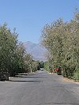 Time to move on again, this time heading from vast deserts to lush green forests. I woke up at 7.45am and unable to sleep anymore, decided to get up and get showered. I realised that by the time I woke, Mary would be already married - I'd slept through her wedding! 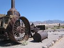Dan woke up not long after and then we wandered to the laundromat to do some much needed washing. It didn't take too long to wash, but the drying was a chore (and also the shaking of all the clothes to get rid of the tissue which I'd left in a pocket!) 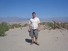 Once done, we finished our packing and headed for breakfast. Unable to face the 49er cafe after last night, we went to the store to purchase some food. The selection of sandwiches didn't look too appealing so I stuck with crisps. Dan however felt brave (or just too hungry) and ate a triple cheese and ham sandwich. I managed a small bite - I don't know how he managed all three! 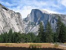Time to hit the road. We made a couple of stops along the way, firstly at an old Borax works, then at some real desert sand dunes. Although it was a mere 95.F (positively chilly in Death Valley terms) the combination of burning sun and burning sand has us exhausted and we were very glad that Colin had air conditioning. 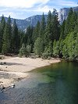After the stop at the sand dunes, we made one more stop at the village shop in Stovepipe Wells to stock up on drinks. The rest of the drive was pretty uneventful, lots of driving on straight roads through Death Valley. 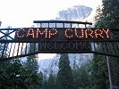 Eventually we reached the Tioga Pass park entrance to Yosemite. Nearly there we thought... The Tioga Pass was very windy and took us up and over the mountains. Eventually, after around 2 hours, we finally reached Yosemite Village and our home for the next 4 nights - Curry Village. We arrived just after 7.00pm, a total drive time of 7 hours! 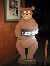 We learned very quickly that after 8.00pm, things in Yosemite stop. The only things left open till 10.00pm was the Pizza Patio and the bar. We ordered pizza which we sat and ate on the cold patio area. It was then that I realised that I was truly "outdoors" and would need to invest in a warm top for the evenings. 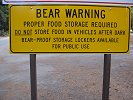 The only bad thing about our accommodation was that because we were in bear country, you weren't allowed any food, drink or toiletries in or around your tent as it would attract the bears. It all had to be stored in our very own "bear locker"! After our pizza, we decided to call it a night and headed off to bed. Sunday 18th September 2005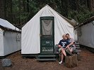 Having been woken up a number of times by noisy neighbours, we managed to sleep in till late. We had missed the 10.00am breakfast deadline so headed to the store in search of food. 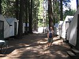 We bought ingredients for a DIY brunch which included bread, salami, cheese and potato salad. A very weird combination. After various trips back and forwards to the tent, we finally made our way in search of the bike and raft rentals. 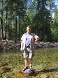 It would seem September is not the best time to visit Yosemite, a lot of things are closed for the season, raft hire being one of them and one of the things we'd both been looking forward to. Instead we invested in some stylish bikes with no brakes and headed off on a sightseeing mission (it was 1.00pm by now and we hadn't managed to do anything!) 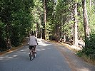We cycled towards the village and stopped in the store to buy some drinks and a stylish ASBO hoodie for me. Now laden with shopping, we headed back to Curry Village to drop the bag off at the car. We continued our cycle round the main cycle routes to the east of Curry Village and along through Yosemite Village to Lower Yosemite Falls. 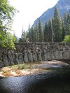 After a 10 minute walk we arrived at the falls although like most things in Yosemite, they too had given up for the season (maybe this is why we got a surprise $100 reduction in our accommodation when we checked in) 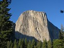 It was getting near to 4.00pm which meant we'd had the bikes for nearly 3 hours so we decided to head back and return the bikes. Having learnt our lesson about eating early, we headed straight for the showers for a wash and change and then headed off in the car to our chose venue for this evening's meal, the Yosemite Lodge We arrived at the restaurant to be told that we'd have a 20 minute wait which, as it was only 6.00pm, didn't bother us. Our buzzer to tell us our table was ready went off after only 10 minutes, while we were purchasing Roger the Racoon for George. 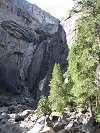 The menu looked good and I was a little disappointed at being Des when the waiter asked us if we wanted to start with cocktails. The food wasn't too bad, although my steak looked better than it was. Dan's lamb was certainly the highlight. With very full bellies and $90 lighter, we headed back to our tent and I am sad to say that we were ready for bed well before 9.00pm! Well, we wanted relaxation and I can certainly say we're getting plenty. After some bedtime reading, we called lights out at 9.40pn. Monday 19th September 2005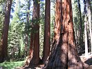 We are very lazy! Having been in bed at a ridiculous hour you'd have thought that we'd be up with the larks this morning. Yeah, right! 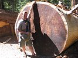
We were finally up and ready sometime just before midday. Having missed breakfast again, we decided to
try the village deli for lunch. A small sandwich and a bowl of chilli doesn't sound a lot but as usual,
we had far too much food. Lunch gone, we decided on the day's activity ad set off to Mariposa Grove, home
of the giant Sequoia trees. After an hour or so's journey, we arrived at Marpissa Grove. A range informed us of our 3 options - taking a $16 tour of the whole area, walking an hour's round trip to see the famous "Grizzly Giant" tree or doing the same route with him which took slightly longer as he told you about what you see along the way. We decided on the last option, might as well find out about what you're looking at from someone who knows.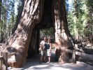 The tour was very informative and after an hour and a quarter, we arrived at the "Grizzly Giant". We even saw some deer along the way, a mother and her 2 babies. After some photos with the Grizzly Giant, 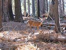 we wandered along to see the California Tree which had a big hole cut through the bottom of it which allowed you to walk through. 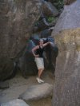 Leaving Marpissa Grove, we drove back towards Curry Village stopping one last time at Bridalviel Falls. This time, the falls were indeed falling, though not quite as impressively as they might. As they weren't flowing heavy we were able to climb up the rocks towards the falls. I gave up after a while but Dan carried on and made it all the way to the bottom of the falls (which was quite a long way) and having looked at the photos, I wished I'd gone too.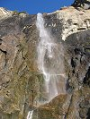 We finally made it back to camp and after a quick shower and change, we headed off to the Dining Pavilion. At $12 for an "all you can eat" buffet which the guidebook described as "mediocre" we weren't expecting a lot but we were very surprised. Although the choices were pretty standard, it turned out to be very tasty and we of course ate till we felt sick. We did manage a couple of drinks in the bar before bed. Tuesday 20th September 2005 (...by Dan)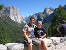 we too our laziness to new heights this morning. The bed was giving up backache and I suspect we were only 15 minutes shy of developing bed sores by the time we got up. 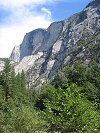 We caught the half electrical eco-shuttle (bus) to the village and crammed ourselves with food (again). Chilli in a sourdough bread bowl with the first half decent cup of coffee I've had in days. Bellagio coffee was actually a little horrible! Sitting outside the deli (Degnon's Deli to be precise) we had time to catch up with postcard and journal writing. Shockingly my dear journal reader, today is the first day we've been up to date with the journal since New York city, which seems like a lifetime ago. 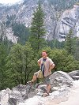 A friendly Blackadder fan in the post office sold us some stamps for ten cards which we'd had hanging about since Vegas but which are now on their way back to Blighty. 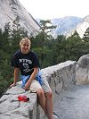 Finally, at around 3.00pm we headed off to do an activity. We caught the bus back to Mirror Lake trailhead, planning to walk to the lake but, on a whim, got off a stop early and decided to head up a slightly steeper trail to the Vernal and Nevada Falls. The trail itself eventually heads all the way up to the top of Half Dome, a mere 15 or so mile trek, but one which ascends about 5000 feet! 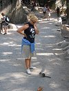 We bought water and some lurid pink "Powerade" for Lorna and headed up the wide semi-paved path. It was hard work and pretty steep but eventually we got as far as the Vernal footbridge, 0.3(ish) miles short of the falls (and 500 feet lower) 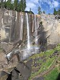 Lorna had had quite enough by this point and as I'm not a git, I saw no reason to argue. I headed up a alone. I hate walking uphill. Those who joined me on "the walk" will know this, but I also hate to give up because I'm too bloody-minded. At times during my speed-walk up to the top of Vernal Falls it was hard to stay upright. My vast, engorged and bloated body wasn't happy at all. 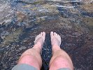I made it in the end though. The view was spectacular and I really felt happy and I really felt happy to have made it. At the top of Vernal Falls is the Emerald Lake in which I washed my feet and cooled myself down. Uphill I hate but downhill is fine so I jogged back down to meet the long-suffering Lorna back at the bridge. 40 minutes up, 10 minutes down! 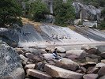We wandered back down and caught the enviro-bus back to Curry Village, stopping slightly early for a look at three stags taking a nap in the meadow We got the shot and headed home. 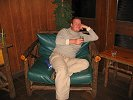 Showers were a must though my feet are engrained with muck and will need sanding down. Dinner at the buffet again, then drinks at the bar where I got annoyed at the quantity of English people in Yosemite. Which brings us to now! Lorna's just turning in and I'm, well, writing. Frisco tomorrow! |